V01
Thu Aug 20 · 12:19 EDTMoved off within 12 scoyoteDeer at the corn edge when the coyote plays. It lingers by the edge about 8 s and is gone into the corn by +12 s. The camera clock read 1970 during this clip, so the camera's own clip can't be lined up with the sound.
Close-ups around the first sound
Two seconds before, the moment of the sound, then +1 to +20 s, cropped to the animal. Orange boxes are what the pod (or the cloud) was tracking.
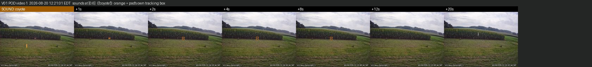
V02
Thu Aug 20 · 19:42 EDTMoved off within 12 scoyoteDeer walks along the corn edge from left to centre after the coyote and is out of view by +12 s. The camera clock also read 1970 here.
Close-ups around the first sound
Two seconds before, the moment of the sound, then +1 to +20 s, cropped to the animal. Orange boxes are what the pod (or the cloud) was tracking.
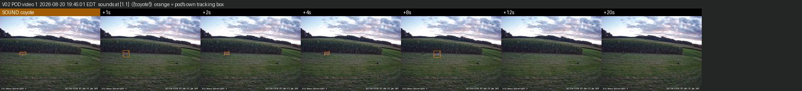
V03
Fri Aug 21 · 00:36 EDTNo sound playedNight. A faint deer crosses; the pod didn't react, so no sound played.
V04
Fri Aug 21 · 05:22 EDTGone in secondsdogDeer at the left corn edge. Within 2 to 4 s of the dog sound it is gone. The camera's microphone picks up the dog at +48 dB at exactly the logged second. The strongest evidence in this set of a deer reacting.
Close-ups around the first sound
Two seconds before, the moment of the sound, then +1 to +20 s, cropped to the animal. Orange boxes are what the pod (or the cloud) was tracking.
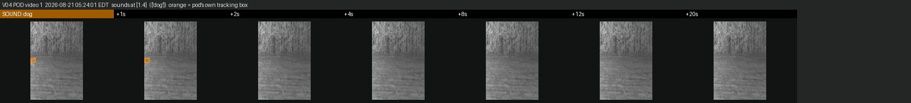
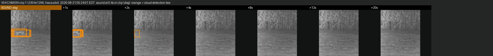
V05
Fri Aug 21 · 06:17 EDTMoved off within 12 stiger ×2Two sessions a few minutes apart. Each time the tiger plays with a deer at the corn edge, and the deer is into the corn within about 4 to 8 s. The camera's microphone records the tiger both times (+37 dB and +44 dB).
Close-ups around the first sound
Two seconds before, the moment of the sound, then +1 to +20 s, cropped to the animal. Orange boxes are what the pod (or the cloud) was tracking.
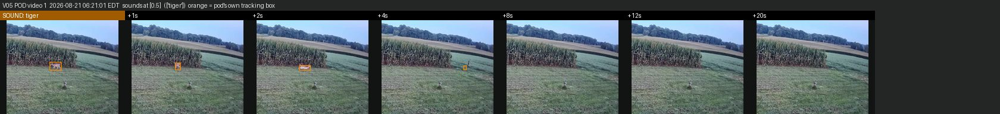
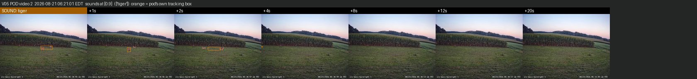
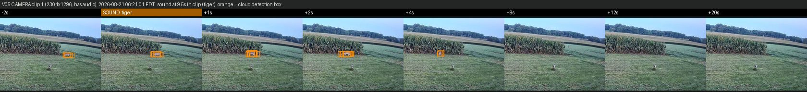
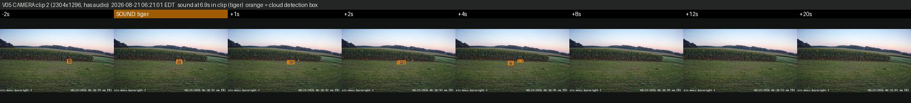
V06
Fri Aug 21 · 07:39 EDTNo sound playedDaylight, deer in the lower left. It leaves view within about 12 s with no sound at all. Compare this with the visits where a sound played.
V07
Fri Aug 21 · 19:51 EDTNo sound playedDusk, deer at the left. Gone within about 9 s, again with no sound played.
V08
Fri Aug 21 · 21:11 EDTNo sound playedNight. The deer is faint in infrared and the pod didn't react.
V09
Sat Aug 22 · 03:23 EDTNo sound playedNight. The deer is faint in infrared and the pod didn't react.
V10
Sat Aug 22 · 05:41 EDTNo sound playedDawn haze. The deer is faint and the pod didn't react.
V11
Sat Aug 22 · 13:52 EDTStayed through the soundcoyoteMidday, a deer in the open close to the camera. After the coyote it keeps walking around the field for 20 s or more and drifts back toward the corn. No sign of flight. The microphone records the coyote at +15 dB.
Close-ups around the first sound
Two seconds before, the moment of the sound, then +1 to +20 s, cropped to the animal. Orange boxes are what the pod (or the cloud) was tracking.
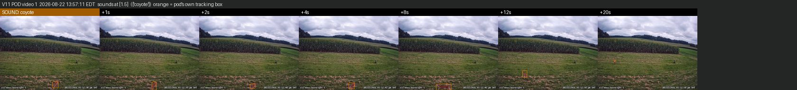
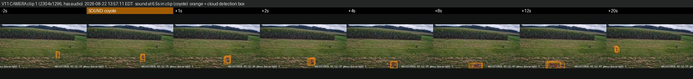
V12
Sun Aug 23 · 03:06 EDTNo sound playedNight, with glare in the corner of the lens. The deer is faint; no sound.
V13
Tue Aug 25 · 19:56 EDTCan't telltiger ×2This pod video never uploaded and has since been deleted from the pod.
The pod played 3 sounds, but its video never uploaded and has since been deleted from the pod. The camera's own clip shows the deer.
V14
Thu Aug 27 · 06:41 EDTMoved off within 12 scoyoteDeer at the corn edge when the coyote plays. It moves right along the edge and is gone by +12 s.
Close-ups around the first sound
Two seconds before, the moment of the sound, then +1 to +20 s, cropped to the animal. Orange boxes are what the pod (or the cloud) was tracking.
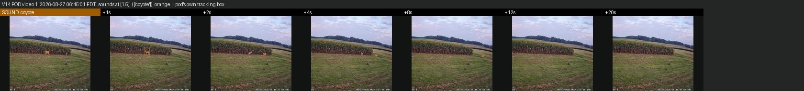
V15
Fri Aug 28 · 05:33 EDTGone in secondsdogNight. A deer mid-field; within 2 to 4 s of the dog sound it is gone. The microphone records the dog at +38 dB at the logged second. The pod labelled this session “stayed”.
Close-ups around the first sound
Two seconds before, the moment of the sound, then +1 to +20 s, cropped to the animal. Orange boxes are what the pod (or the cloud) was tracking.
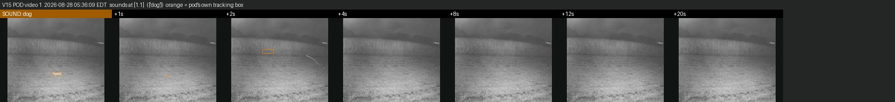
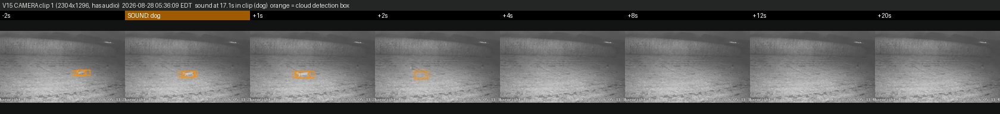
V16
Sat Aug 29 · 05:58 EDTCan't telldeerDawn infrared with glare on the lens. The pod's tracker sits on the right edge and no deer is visible in its video. The pod labelled this “fled”.
Close-ups around the first sound
Two seconds before, the moment of the sound, then +1 to +20 s, cropped to the animal. Orange boxes are what the pod (or the cloud) was tracking.
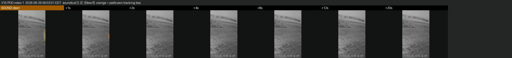
V17
Tue Sep 1 · 19:23 EDTStayed through the soundcoyote, dogCoyote first: two does stand at the corn edge for 20 s or more afterwards. When a dog sound plays two minutes later, they are gone within about 8 s.
Close-ups around the first sound
Two seconds before, the moment of the sound, then +1 to +20 s, cropped to the animal. Orange boxes are what the pod (or the cloud) was tracking.
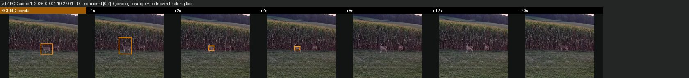
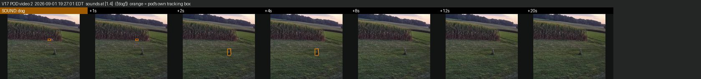
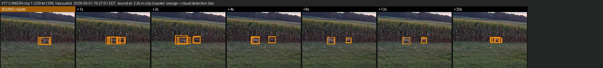
V18
Wed Sep 2 · 07:07 EDTMoved off within 12 scoyoteDeer in the field. After the coyote it moves off to the right, in what looks like a trot, and is gone within 4 to 8 s. The microphone records the coyote at +36 dB.
Close-ups around the first sound
Two seconds before, the moment of the sound, then +1 to +20 s, cropped to the animal. Orange boxes are what the pod (or the cloud) was tracking.
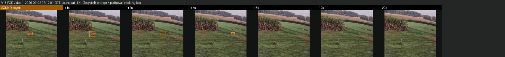
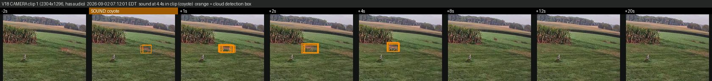
V19
Wed Sep 2 · 19:56 EDTMoved off within 12 stiger, hornA deer far off at the corn edge. After the tiger it is out of the pod's view within about 4 s. Too small to tell whether it ran or just stepped into the corn.
Close-ups around the first sound
Two seconds before, the moment of the sound, then +1 to +20 s, cropped to the animal. Orange boxes are what the pod (or the cloud) was tracking.
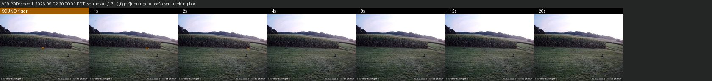
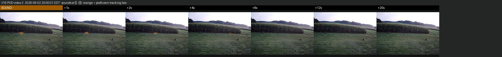
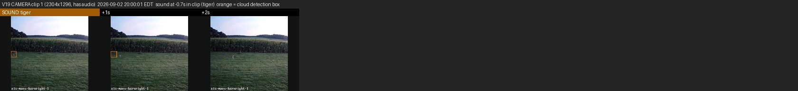
V20
Fri Sep 4 · 19:20 EDTMoved off within 12 sdog ×2, coyoteFirst a deer in the field walks off to the left within about 8 to 12 s of the dog. Fifteen minutes later a smaller deer stays 12 to 20 s after a coyote.
Close-ups around the first sound
Two seconds before, the moment of the sound, then +1 to +20 s, cropped to the animal. Orange boxes are what the pod (or the cloud) was tracking.
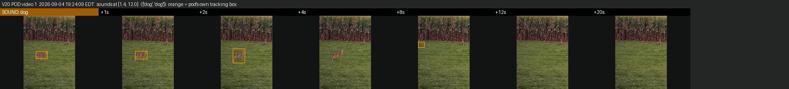
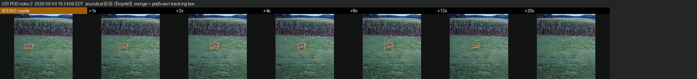
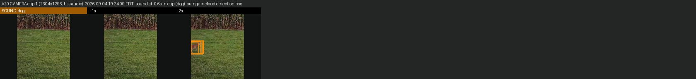
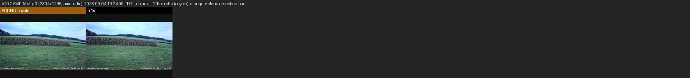
V21
Sat Sep 5 · 19:47 EDTStayed through the soundhorn, coyoteThe deer keeps walking along the corn edge for 12 s or more, through a horn and then a coyote.
Close-ups around the first sound
Two seconds before, the moment of the sound, then +1 to +20 s, cropped to the animal. Orange boxes are what the pod (or the cloud) was tracking.
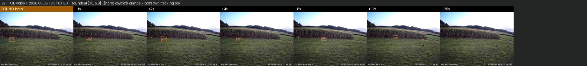
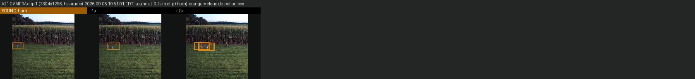
V22
Sun Sep 6 · 04:53 EDTMoved off within 12 scoyote ×2, tiger ×3, horn ×2, dog ×2, deerNight. The deer is gone within about 8 s of the coyote. This is the one sound the camera's microphone didn't register. The pod's second session here, 13 sounds over two minutes, was aimed at a smeared lens, not the deer.
Close-ups around the first sound
Two seconds before, the moment of the sound, then +1 to +20 s, cropped to the animal. Orange boxes are what the pod (or the cloud) was tracking.
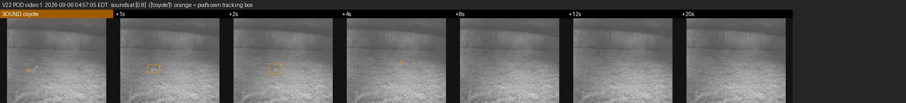
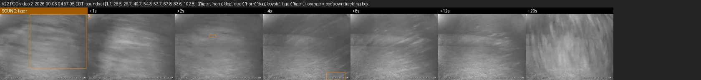
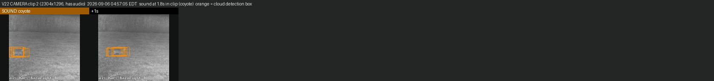
V23
Sun Sep 6 · 19:39 EDTStayed through the sounddog, deer, coyoteTwo deer stay about 12 s after the coyote and are gone by +20 s.
Close-ups around the first sound
Two seconds before, the moment of the sound, then +1 to +20 s, cropped to the animal. Orange boxes are what the pod (or the cloud) was tracking.
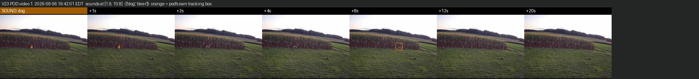
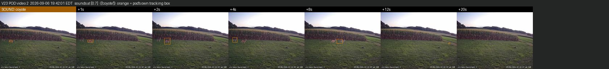
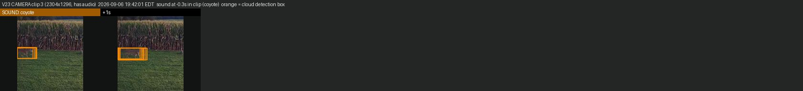
V24
Mon Sep 7 · 03:09 EDTNo sound playedNight, a web strand at the top of the frame. The deer is faint; no sound.
V25
Mon Sep 7 · 06:23 EDTStayed through the sounddeer ×2, coyoteThe deer stays 20 s or more through a deer alarm call and then a coyote. In a second session fifteen minutes later, the deer is gone within about 8 s.
Close-ups around the first sound
Two seconds before, the moment of the sound, then +1 to +20 s, cropped to the animal. Orange boxes are what the pod (or the cloud) was tracking.
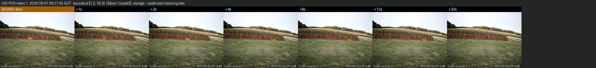
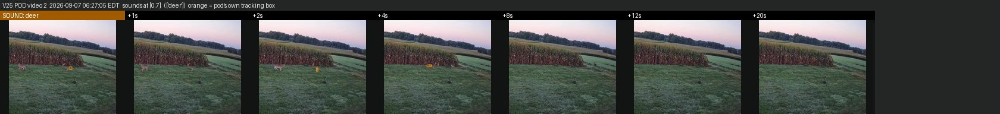
V26
Tue Sep 8 · 21:43 EDTMoved off within 12 shorn, deerNight, behind a dew-lit web strand. The deer is gone within about 8 s of the horn.
Close-ups around the first sound
Two seconds before, the moment of the sound, then +1 to +20 s, cropped to the animal. Orange boxes are what the pod (or the cloud) was tracking.
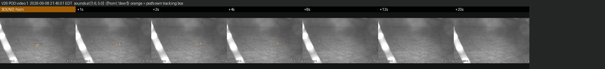
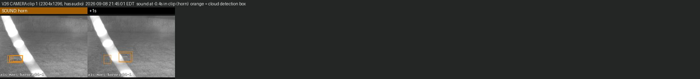
V27
Wed Sep 9 · 19:24 EDTStayed through the soundhorn, dog, tigerThe clearest non-reaction. The deer stands in the open through a horn and then a dog, and is still there 20 s later.
Close-ups around the first sound
Two seconds before, the moment of the sound, then +1 to +20 s, cropped to the animal. Orange boxes are what the pod (or the cloud) was tracking.

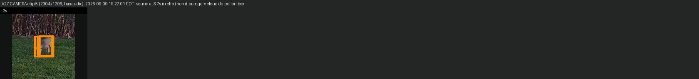
V28
Thu Sep 10 · 01:58 EDTStayed through the soundtiger ×10, horn ×7, coyote ×6, deer ×5, dog ×6Six sessions and 34 sounds in about 16 minutes, all set off by a dew-lit web strand. A deer walks into view during one of them and stays while the sounds keep playing.
Close-ups around the first sound
Two seconds before, the moment of the sound, then +1 to +20 s, cropped to the animal. Orange boxes are what the pod (or the cloud) was tracking.
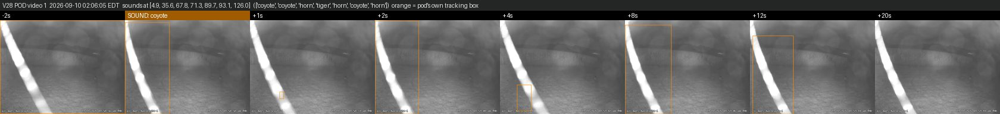
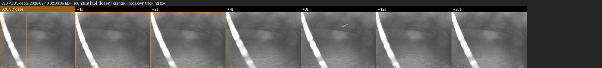
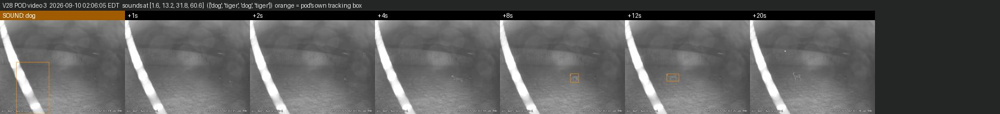
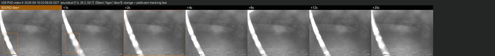
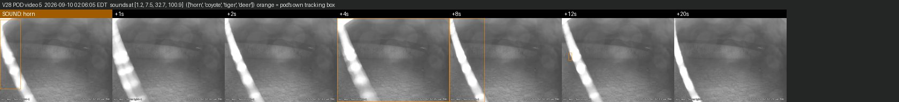
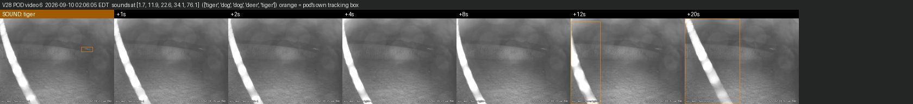
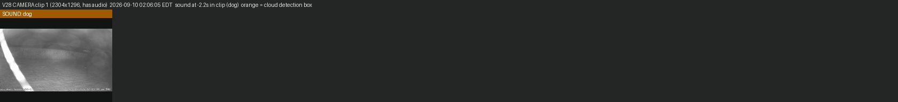
V29
Fri Sep 11 · 03:09 EDTCan't tellcoyoteNight. The pod's tracker is on an insect near the lens; the deer isn't visible in the pod's video. The pod labelled this “fled”.
Close-ups around the first sound
Two seconds before, the moment of the sound, then +1 to +20 s, cropped to the animal. Orange boxes are what the pod (or the cloud) was tracking.
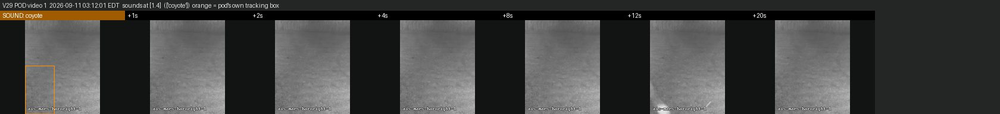
V30
Fri Sep 11 · 03:30 EDTCan't telldeerNight. Again the pod's tracker is on an insect near the lens, and the deer isn't visible in its video.
Close-ups around the first sound
Two seconds before, the moment of the sound, then +1 to +20 s, cropped to the animal. Orange boxes are what the pod (or the cloud) was tracking.
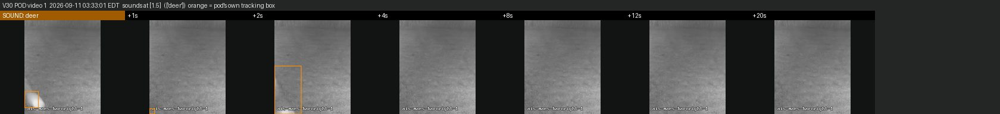
V31
Sat Sep 12 · 05:14 EDTNo sound playedNight. The deer is faint; no sound.